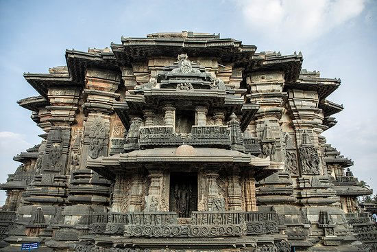

TourKarnataka.com
BEST TOURIST PLACES IN CHIKKAMAGALURU
MULLAYANAGIRI
At a distance of 20 km from Chikmagalur and 23 km from Baba Budangiri (by road), Mullayanagiri located in Chikmagalur district is
the highest peak in Karnataka with an altitude of 1950 meters. Regarded as the highest peak between Himalayas and Nilgiris, Mullayanagiri is one of the best treks in Karnataka and among the top trekking places to visit in Chikmagalur.Mullayanagiri is best known as a hub for adventure enthusiasts, especially trekkers as this destination is adorned with perfect trek trails. The starting point of this 4 km trek is Sarpadhari which is a steep trail. One can also engage in other thrilling activities such as mountain biking and road biking. It is also one of the top attractions you must include in Chikmagalur Packages.
The peak gets its name from a small temple at the summit, which is dedicated to a Tapasvi Mullappa swamy, who is believed to have meditated at the cave near the summit. For adventure enthusiasts, the location offers an opportunity to engage in activities like mountain biking, trekking and road biking.
Timings: 9:00 AM - 6:00PM Time Required: 30 minutes
Entry fee: No entry fee Holiday: No holiday
Best season to go: Rainy season
BHADRA WILD SANCTUARY
At a distance of 39 km from Chikmagalur & 12 km from Mallandur village, Bhadra Wildlife Sanctuary is a protected area and a tiger reserve, situated amidst Western Ghats in Chikmagalur and Shimoga districts of Karnataka. It is also one of the most popular Wildlife Sanctuaries in Karnataka and among the popular places for wildlife buffs as part of India wildlife tour.
Spread over an area of 490 Sq. km, Bhadra Wildlife Sanctuary is also known as Muthodi Wildlife Sanctuary.Larger metropolitan cities are well connected to Bhadravthi and Birur by bus and rail. There is frequent local bus service from Bhadravathi to both Bhadra Dam and Bhadra WLS. The nearest airport is in Mangalore, around 163 km (101 mi) from Bhadra Wildlife Sanctuary. The region was declared as a natural reserve, known as the Jagara Valley Game Reserve, in 1951 by Government of Mysore. In 1974, the reserve was named as the Bhadra Wildlife Sanctuary. The Sanctuary boasts of a substantial tiger population and it was declared as the 25th Project Tiger of India in 1998.
The sanctuary is situated in lush tropical forests of the Western Ghats and accommodates the tributaries of the Bhadra River.
Timings: 6:30 AM - 9:30PM Time Required: 2-3 Hours
Entry fee: 250Rs Holiday: No holiday
Best season to go: All season
HALEBIDU

At a distance of 17 km from Belur, 34 km from Chikmagalur, 32 km from Hassan, 148 km from Mysore & 211 km from Bangalore, Halebidu is located in Hassan District of Karnataka State. Halebidu (or Halebid) is famous for the beautiful Hoysala Temples of Hoysaleswara and Kedareswara built in 1121 AD. It is one of the three Hoysala temples nominated for UNESCO World Heritage Sites, other two being the Belur temple & Somnathpur temple). The Hoysala temples are known for minute & intricate carvings and sculptures with metal like polishing. Halebidu is among the most popular tourist places in Karnataka.
Halebidu was the glorified royal capital of the Hoysala kingdom in 12th Century. Halebidu, which was previously called Dorasamudra or Dwarasamudra, got the name 'Halebidu' literally meaning 'The Old City' because it was ruined two times during the invasion of Malik Kafur.The temple town comprises two Hindu temples, the Hoysaleswara, Kedareswara temples and two Jain basadis.There is an archeological museum in the temple complex. These temples are surrounded by a big lake.
Timings: 6:30 AM - 9:30PM Time Required: 2-3 Hours
Entry fee: 50Rs Holiday: Friday
Best season to go: All season
CHARMADY GHAT
At a distance of 34 km from Belthangady and 57 km from Chikmagalur, Charmadi Ghat or Charmady is a Ghat in Belthangady taluk of Dakshina Kannada and Mudigere taluk of Chikmagalur. It is one of the popular ghat roads in Karnataka and among the must-visit places to visit as part of Chikmagalur Tour Packages.
Charmady Ghat is one of the most scenic and dangerous (to drive) Ghats of Karnataka. It is one of the points in Western ghats through which motorable road passes connecting Dakshina Kannada with Chikkamagaluru district. The 25 km stretch starting from Kottigehara and ends at Charmadi Village is awesome, calm, and peaceful.It lies on National Highway 73 that connects Mangaluru to Tumkuru. This ghat section has 12 Hairpin curves and receives very heavy rainfall of over 7000 mm during the monsoon.Charmadi Ghat is known for its visual beauty as it is home to lush forests, evergreen shrubs, streams, and waterfalls.The National Highway 73 (previously national highway 234) climbs the Western ghats from Charmadi.
Timings: No timings Time Required: 30 minutes
Entry fee: No entry fee Holiday: No holiday
Best season to go: Rainy season
AMRUTHAPURA
At a distance of 39 km from Kemmangundi, 47 km from Shimoga, 79 km from Chikmagalur & 9 km from Tarikere, Amruthapura is a village located in Chikmagalur district of the Karnataka which is well known for the famous Amruteshwara Temple.The National Highway 73 (previously national highway 234) climbs the Western ghats from Charmadi. This ghat section has 12 Hairpin curves and receives very heavy rainfall of over 7000 mm during the monsoon.
The Amruteshwara Temple is an ancient temple built in 1196 AD by Amruteshwara Dandanayaka, a general of the Hoysala ruler Veera Ballala II. Ruvari Mallitamma, the well-known Hoysala sculptor and architect is known to have started his career here working on the domed ceilings in the main mantapa. On the porch of the temple is a large stone inscription, a fine example of medieval Kannada poetry. This temple is situated near the Bhadra Reservoir in Malnad region surrounded by coconut and palm plantations.
Timings: 6:00 AM - 6:00PM Time Required: 2 Hours
Entry fee: 250Rs Holiday: No holiday
Best season to go: All season